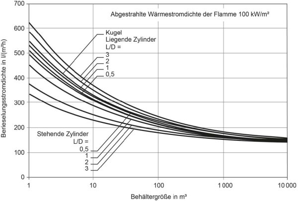
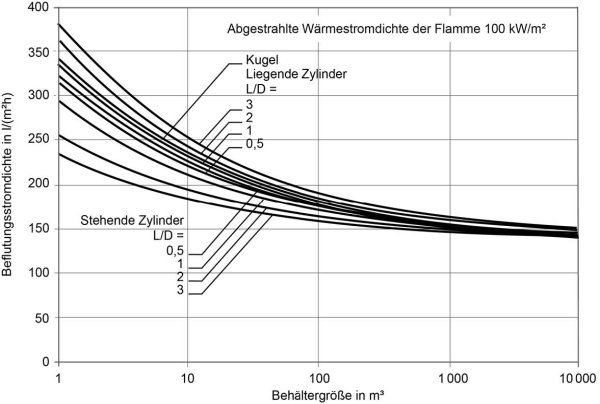
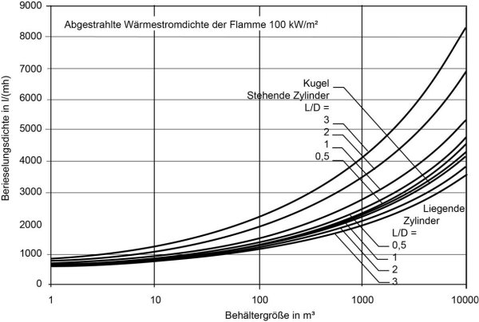
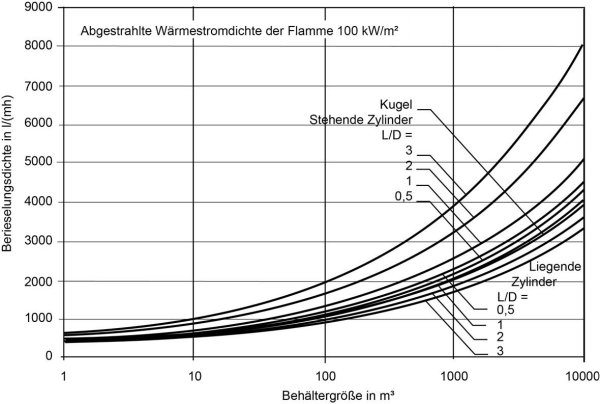
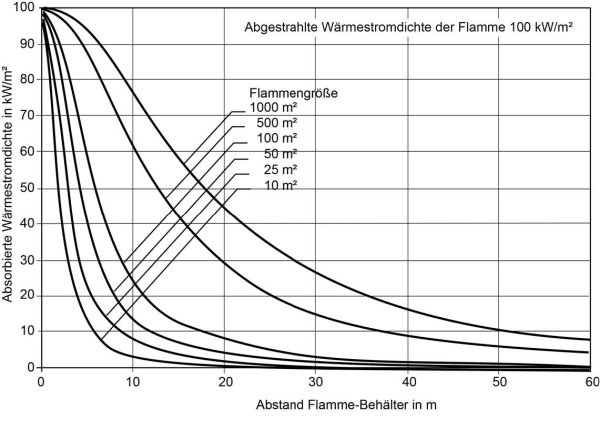

Die Diagramme wurden nach folgenden Beziehungen ermittelt:
A Unterfeuerung (Full engulfment)
Die erforderlichen Berieselungs-/Beflutungsstromdichten sind in Abhängigkeit vom Behältervolumen für Kugelbehälter und stehende bzw. liegende zylindrische Behälter in den Abbildungen 8a und 8b dargestellt; die dazugehörigen Berieselungs-/Beflutungsdichten ergeben sich aus den Abbildungen 9a und 9b.
Die entsprechenden Diagramme wurden nach folgenden Beziehungen ermittelt:
mit
B Unterfeuerung
Bei der Unterfeuerung erfolgt die Erwärmung eines Behälters durch eine Flamme unterhalb des Behälters im Gegensatz zu dem full engulfment, bei dem der gesamte Behälter in Flammen eingehüllt ist.
Von dem von einer Flamme abgegebenen Wärmestrom QF gelangt nur der Anteil Qabs auf die Behälteroberfläche und wird dort von dem Kühlwasser absorbiert. Es gilt:
mit ØBF Einstrahlzeit (geometrische Größe).
Die Berechnung der erforderlichen Kühlwassermassenströme mit Hilfe der Einstrahl-zahl und unter entsprechender Anwendung des Rechenganges für full engulfment ist sehr aufwendig, im Einzelfall jedoch möglich.
Im Folgenden werden für zwei Sonderfälle vereinfachte Berechnungsmöglichkeiten vorgestellt:
C Nachbarschaftsbrand
Wie bei der Unterfeuerung gelangt auch beim Nachbarschaftsbrand nur ein Teil des von einer Flamme abgegebenen Wärmestromes auf die Behälteroberfläche, Glei-chung 2 findet ebenso Anwendung.
Mit Hilfe folgenden Modells (Flamme = Kreisscheibe) kann die größte, auf der Behälteroberfläche absorbierte Wärmestromdichte qabs berechnet werden:
mit
Die auf der Behälteroberfläche auftreffende Wärmestromdichte ist in Abbildung 10 über der Entfernung aufgetragen; man erkennt beispielsweise bei einer Flammengröße von 10 m2, dass sich qabs von 100 kW/m2 (Abstand 0) schon in einer Entfernung von 5 m auf 11 kW/m2 verringert.
Setzt man den so errechneten Wert in die Gleichungen 1a und 1b ein, so sind ṁ bzw. Γ bekannt.
Berieselung:
Kühlung eines Behälters mit Wasser. Das Wasser wird gleichmäßig mit Hilfe eines Düsensystems auf die zu kühlende Oberfläche aufgebracht.
Beflutung:
Kühlung eines Behälters mit Wasser. Das Wasser wird zentral über einen im oberen Behälterbereich angeordneten Zahnkranz aufgebracht. Das überlaufende Wasser läuft als gleichmäßiger Wasserfilm an der Behälteroberfläche ab.
Berieselungs-(Beflutungs-)stromdichte ṁ :
Wassermassenstrom zur Berieselung (Beflutung), bezogen auf die zu kühlende Behälteroberfläche, in kg/(m2 ∙ h).
Berieselungs-(Beflutungs-)stromdichte Γ:
Wassermassenstrom zur Berieselung (Beflutung), bezogen auf den größten hori-zontalen Behälterumfang, in kg/(m ∙ h).
Unterfeuerung:
Brandereignis, bei dem in der Behältertasse angesammelte Flüssigkeit abbrennt.
Full engulfment:
Unterfeuerung, bei der der unterfeuerte Behälter vollständig in Flammen eingehüllt ist.
Nachbarschaftsbrand:
Brandereignis außerhalb der Behältertasse.
Wärmestromdichte qF:
Von einer Flamme abgegebener Wärmestrom, bezogen auf die Flammenoberfläche, in kW/m2.
Wärmestromdichte qabs:
Der Anteil des von der Flamme abgegebenen Wärmestromes, der von der Behälteroberfläche bzw. von dem Kühlwasser, das an seiner Oberfläche abläuft, absorbiert wird, bezogen auf die Behälteroberfläche, in kW/m2.
Es bedeuten:




